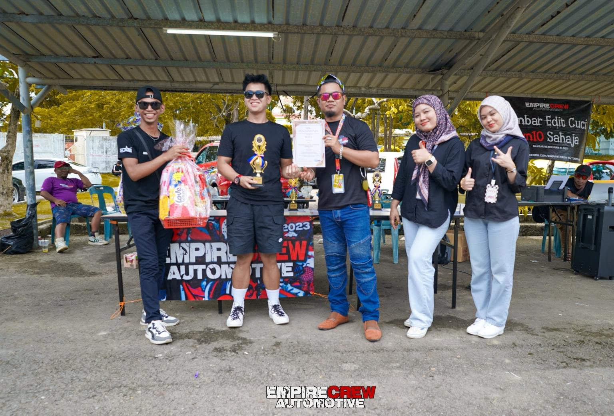
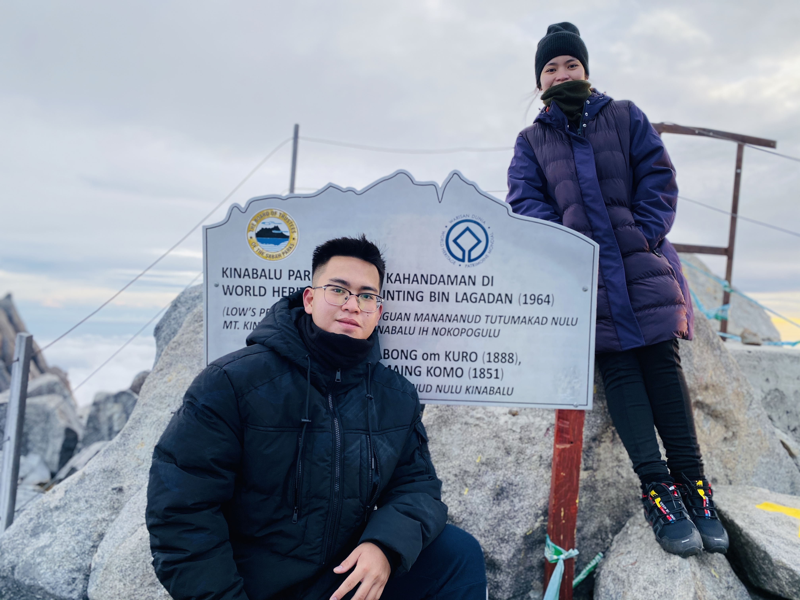
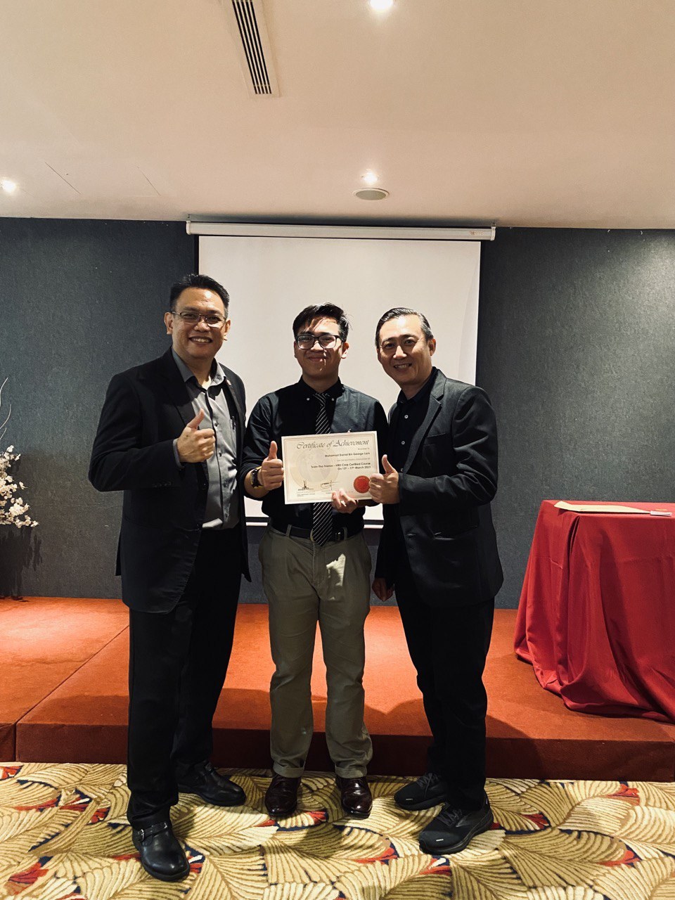

ACHIEVEMENTS
- Won my first autoshow in the MPV category on 14th July 2024.
- Won my second autoshow in the MPV category on 10th October 2024.
- Successfully hiked Rinjani Mountain, Lombok, Indonesia (3,726 mdpl) on 31st August 2024.
- Reached the Kinabalu Summit (4,095 mdpl) for the first time on 9th August 2021.
- Completed a second Kinabalu Mountain hike (4,095 mdpl) on 20th November 2021.
- Achieved the "Train the Trainer" qualification by Human Resource Development Malaysia.

First Autoshow Win

Second Autoshow Win

The beutiful dewa anjani in lombok

First Kinabalu Summit

Second Kinabalu Summit

Train the Trainer Qualification by HRDC